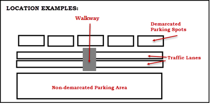

Current Intelligent Environments is a set of services and APIs that GE has made available to facilitate application development. The services are in two categories, Intelligent Cities and Intelligent Enterprises.
Using the Intelligent Cities APIs, you can develop software integration applications to enhance city and county planning. The APIs link to data relevant to the monitoring and management of parking, vehicle and pedestrian traffic, and situational awareness in monitored lots and roadways.
Using the Intelligent Enterprises APIs, you can develop software integration applications to enhance user experience and interaction with a building environment. The APIs link to data relevant to enterprise environmental factors, such as CO2, humidity, illuminance, occupancy, and temperature, and indoor positioning information from intelligent lighting and sensors.
For more information, please see Get List of Assets.
Each Intelligent Environments service consists of an API layer, WebSocket services, and a query engine.
The following graphic illustrates the Intelligent Environments Service components:
Client applications can access data using service REST API endpoints. Your application makes an HTTPS request and parses the response. Requests for live data provide a Websocket link. To retrieve WebSocket data, you must use a WebSocket client.
You can use any webdevelopment language to access the APIs.
The query engine enables developers to use JSON to retrieve data about any object or any object property.
| Parameter | Definition |
|---|---|
| assetUid | For Intelligent Environments, an asset is a physical object, such as equipment or a device, such as a sensor, which has the capability to collect or exchange data. It corresponds to a deviceType, mediaType, or eventType. An asset can be a device such as a NODE (parent asset) or a camera, that can capture certain media and events. |
| locationUid | A location is a monitored area, such as a parking zone, walkway, or a traffic lane for a city; site, location, room, or zone for an enterprise.  |
| locationType |
|
| node | A node is a parent asset to other device types. A node can be an intelligent lighting apparatus, while an installed device type can be a camera, microphone, and/or environmental sensor. More than one device type can be installed on the node. See the Bounding Box graphic below. |
| bbox | A bounding box (bbox) establishes the periphery of a searchable area. You define a bounding box using GPS coordinates obtained from a map application such as Google Maps. For information on defining bounding boxes, see the query parameters in the "Simulated Data Stream Information for each API" table. A node can have any or all of the devices attached. The following assets reside within a bound area: |
| eventType |
|
| timestamp | All timestamps are in UTC long format, representing the time in milliseconds in EPOCH format. To convert to EPOCH format, use the EPOCH converter, found here: http://currentmillis.com/ . In addition, we have provided a moment.js which is available via the Traffic Seed App. If you use the same timestamp for start-ts and end-ts, a single result is returned. |
| mediaType Note: Get Media only works when you have access to Situational Awareness.
|
Insert one of the following enumeration codes for a specific media type.
|
Intelligent Environments provides REST and WebSocket services to access data. Responses are in JSON format.
As defined by the query parameters, the Intelligent Environments APIs use "filter" functions to access raw data using HTTPS, and"live" functions to request a WebSocket for receiving near real-time data from any active sensor.
IMPORTANT: Do not create your own URIs. Instead, use the links in this document to navigate between resources.
Example
https://{{metadataurl}}/v2/assets/search?bbox=<long,lat>
https://{{metadataurl}}/v2/locations/search?bbox=<long,lat>
https://{{eventurl}}/v2/assets/<assetUid>/events?eventTypes=<event-type>&startTime=<EPOCH_Timestamp>&endTime=<EPOCH_Timestamp>
https://{{eventurl}}/v2/locations/events?bbox=""&radius=""&eventtype=<String>&locationtype=<String>&starttime=<EPOCH_Timestamp>&endtime=<EPOCH_Timestamp>
https://{{eventurl}}/v2/locations/{locationUid}/events?eventType=<String>&starttime=<EPOCH_Timestamp>&endtime=<EPOCH_Timestamp>
Websocket URL: wss://<production url>/events
{“assetUid":"<assetUID>","eventTypes":["<eventType1>, <eventType2>”]}
{"bbox":"<long,lat>","eventTypes":[“<eventType1>,<eventType2>”]}>
{“locationUid":"<location-UID>","eventTypes":[" <eventType1>,< eventType2>"]}
| Method | Usage |
|---|---|
| GET | Retrieves a resource. |
| POST | Creates a resource. |
| Status Code | Usage |
|---|---|
| 200 OK | Success message. The request has completed. |
| 201 Created | Success message. A new resource has been created. The resource URI is available from the location header in the response. |
| 204 No Content | Success message. An update to an existing resource has been applied. |
| 400 Bad Request | Error message. The request was malformed. The response body provides additional information. |
| 401 Unauthorized | Error message. Either you are not authenticated, or the authentication is incorrect. You must re-authenticate and try again. |
| 403 Forbidden | Error message. You do not have permission to access this resource. |
| 404 Not Found | Error message. The requested resource does not exist. |
| 500 Internal Server Error | Internal Server Error. |